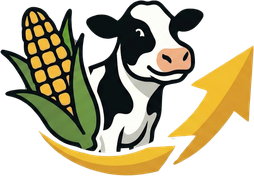

Keine Bullen gefunden – Filter oder Suche anpassen.
Lade Bullendaten …
Tipp: Auf eine Zeile klicken – dann steht dort im Detail, welche Kriterien der Bulle erfüllt und welche nicht.

Bullen aus den Katalogen von WWS, RBW, Prismagen, Semex und CRI Genetics finden – und entscheiden, welche Kühe Holstein und welche British Blue bekommen.
Tipp: Auf eine Zeile klicken – dann steht dort im Detail, welche Kriterien der Bulle erfüllt und welche nicht.
Nur nötig nach jeder Zuchtwertschätzung (3× im Jahr: April, August, Dezember) – die Seite erinnert dich dann automatisch. Bis dahin bleibt die Liste hier gespeichert.
Ohne Download geht es auch: auf der Netrind-Seite alles markieren (⌘A / Strg+A), kopieren und ins Feld „oder einfach kopieren“ einfügen.
🔒 Die Kuhdaten bleiben nur in diesem Browser auf diesem Gerät – sie werden nirgendwohin hochgeladen.
In Lely Horizon die Liste „Offene Kühe Reproduktion“ markieren, kopieren und hier einfügen. Halsbandnummern und andere Werte stören nicht – die Ohrmarken (DE …) werden automatisch erkannt.
Dieselben Kriterien wie in der Bullensuche – hier aber als Anteil am Gesamturteil. Höhere Zuchtwerte sind immer besser (bei RZS heißt über 100: weniger Zellen).
| # | Ohrmarke | Empfehlung | Name | Index |
|---|
Nur zur Orientierung. „Grenzfall“ und Kühe mit sehr hoher Leistung trotz schwacher Zuchtwerte im Lely prüfen und selbst entscheiden.